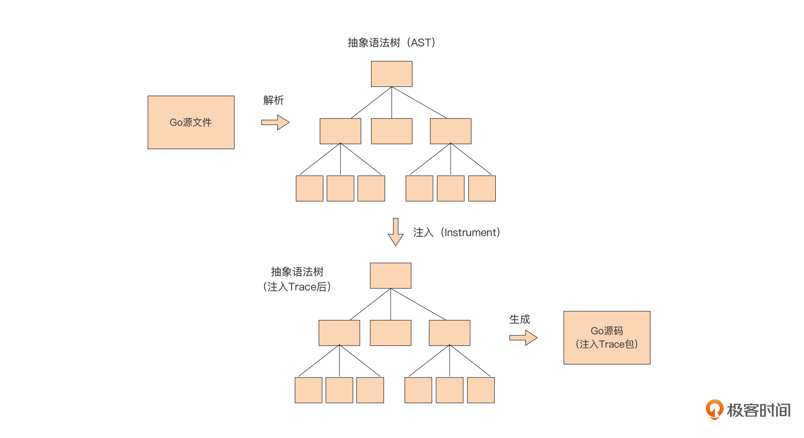

- 00 开篇词 这样入门Go，才能少走弯路.md.html
- 01 前世今生：你不得不了解的Go的历史和现状.md.html
- 02 拒绝“Hello and Bye”：Go语言的设计哲学是怎么一回事？.md.html
- 03 配好环境：选择一种最适合你的Go安装方法.md.html
- 04 初窥门径：一个Go程序的结构是怎样的？.md.html
- 05 标准先行：Go项目的布局标准是什么？.md.html
- 06 构建模式：Go是怎么解决包依赖管理问题的？.md.html
- 07 构建模式：Go Module的6类常规操作.md.html
- 08 入口函数与包初始化：搞清Go程序的执行次序.md.html
- 09 即学即练：构建一个Web服务就是这么简单.md.html
- 10 变量声明：静态语言有别于动态语言的重要特征.md.html
- 11 代码块与作用域：如何保证变量不会被遮蔽？.md.html
- 12 基本数据类型：Go原生支持的数值类型有哪些？.md.html
- 13 基本数据类型：为什么Go要原生支持字符串类型？.md.html
- 14 常量：Go在“常量”设计上的创新有哪些？.md.html
- 15 同构复合类型：从定长数组到变长切片.md.html
- 16 复合数据类型：原生map类型的实现机制是怎样的？.md.html
- 17 复合数据类型：用结构体建立对真实世界的抽象.md.html
- 18 控制结构：if的“快乐路径”原则.md.html
- 19 控制结构：Go的for循环，仅此一种.md.html
- 20 控制结构：Go中的switch语句有哪些变化？.md.html
- 21 函数：请叫我“一等公民”.md.html
- 22 函数：怎么结合多返回值进行错误处理？.md.html
- 23 函数：怎么让函数更简洁健壮？.md.html
- 24 方法：理解“方法”的本质.md.html
- 25 方法：方法集合与如何选择receiver类型？.md.html
- 26 方法：如何用类型嵌入模拟实现“继承”？.md.html
- 27 即学即练：跟踪函数调用链，理解代码更直观.md.html
- 28 接口：接口即契约.md.html
- 29 接口：为什么nil接口不等于nil？.md.html
- 30 接口：Go中最强大的魔法.md.html
- 31 并发：Go的并发方案实现方案是怎样的？.md.html
- 32 并发：聊聊Goroutine调度器的原理.md.html
- 33 并发：小channel中蕴含大智慧.md.html
- 34 并发：如何使用共享变量？.md.html
- 35 即学即练：如何实现一个轻量级线程池？.md.html
- 36 打稳根基：怎么实现一个TCP服务器？（上）.md.html
- 37 代码操练：怎么实现一个TCP服务器？（中）.md.html
- 38 成果优化：怎么实现一个TCP服务器？（下）.md.html
- 39 驯服泛型：了解类型参数.md.html
- 40 驯服泛型：定义泛型约束.md.html
- 41 驯服泛型：明确使用时机.md.html
- 元旦快乐 这是一份暂时停更的声明.md.html
- 加餐 作为Go Module的作者，你应该知道的几件事.md.html
- 加餐 如何拉取私有的Go Module？.md.html
- 加餐 我“私藏”的那些优质且权威的Go语言学习资料.md.html
- 加餐 聊聊Go 1.17版本的那些新特性.md.html
- 加餐 聊聊Go语言的指针.md.html
- 加餐 聊聊最近大热的Go泛型.md.html
- 大咖助阵 叶剑峰：Go语言中常用的那些代码优化点.md.html
- 大咖助阵 大明：Go泛型，泛了，但没有完全泛.md.html
- 大咖助阵 孔令飞：从小白到“老鸟”，我的Go语言进阶之路.md.html
- 大咖助阵 徐祥曦：从销售到分布式存储工程师，我与 Go 的故事.md.html
- 大咖助阵 曹春晖：聊聊 Go 语言的 GC 实现.md.html
- 大咖助阵 海纳：聊聊语言中的类型系统与泛型.md.html
- 期中测试 一起检验下你的学习成果吧.md.html
- 用户故事 罗杰：我的Go语言学习之路.md.html
- 结束语 和你一起迎接Go的黄金十年.md.html
- 结课测试 快来检验下你的学习成果吧！.md.html
- 捐赠
27 即学即练：跟踪函数调用链，理解代码更直观
你好，我是Tony Bai。
时间过得真快！转眼间我们已经完成了这门课基础篇Go语法部分的学习。在这一部分中，我们从变量声明开始，一直学到了Go函数与方法的设计，不知道你掌握得怎么样呢？基础篇的重点是对Go基础语法部分的理解，只有理解透了，我们才能在动手实践的环节运用自如。
同时，基础篇也是整个课程篇幅最多的部分，想必学到这里，你差不多也进入了一个“疲劳期”。为了给你的大脑“充充电”，我在这一讲，也就是基础篇的最后一讲中安排了一个小实战项目，适当放松一下，也希望你在实现这个实战项目的过程中，能对基础篇所学的内容做一个回顾与总结，夯实一下Go的语法基础。
引子
在前面的第23讲中，我曾留过这样的一道思考题：“除了捕捉panic、延迟释放资源外，我们日常编码中还有哪些使用defer的小技巧呢？”
这个思考题得到了同学们的热烈响应，有同学在留言区提到：使用defer可以跟踪函数的执行过程。没错！这的确是defer的一个常见的使用技巧，很多Go教程在讲解defer时也会经常使用这个用途举例。那么，我们具体是怎么用defer来实现函数执行过程的跟踪呢？这里，我给出了一个最简单的实现：
// trace.go
package main
func Trace(name string) func() {
println("enter:", name)
return func() {
println("exit:", name)
}
}
func foo() {
defer Trace("foo")()
bar()
}
func bar() {
defer Trace("bar")()
}
func main() {
defer Trace("main")()
foo()
}
在讲解这段代码的原理之前，我们先看一下这段代码的执行结果，直观感受一下什么是函数调用跟踪：
enter: main
enter: foo
enter: bar
exit: bar
exit: foo
exit: main
我们看到，这个Go程序的函数调用的全过程一目了然地展现在了我们面前：程序按main -> foo -> bar的函数调用次序执行，代码在函数的入口与出口处分别输出了跟踪日志。
那这段代码是怎么做到的呢？我们简要分析一下。
在这段实现中，我们在每个函数的入口处都使用defer设置了一个deferred函数。根据第23讲中讲解的defer的运作机制，Go会在defer设置deferred函数时对defer后面的表达式进行求值。
我们以foo函数中的defer Trace("foo")()这行代码为例，Go会对defer后面的表达式Trace("foo")()进行求值。由于这个表达式包含一个函数调用Trace("foo")，所以这个函数会被执行。
上面的Trace函数只接受一个参数，˙这个参数代表函数名，Trace会首先打印进入某函数的日志，比如：“enter: foo”。然后返回一个闭包函数，这个闭包函数一旦被执行，就会输出离开某函数的日志。在foo函数中，这个由Trace函数返回的闭包函数就被设置为了deferred函数，于是当foo函数返回后，这个闭包函数就会被执行，输出“exit: foo”的日志。
搞清楚上面跟踪函数调用链的实现原理后，我们再来看看这个实现。我们会发现这里还是有一些“瑕疵”，也就是离我们期望的“跟踪函数调用链”的实现还有一些不足之处。这里我列举了几点：
- 调用Trace时需手动显式传入要跟踪的函数名；
- 如果是并发应用，不同Goroutine中函数链跟踪混在一起无法分辨；
- 输出的跟踪结果缺少层次感，调用关系不易识别；
- 对要跟踪的函数，需手动调用Trace函数。
那么，这一讲我们的任务就是逐一分析并解决上面提出的这几点问题进行，经过逐步地代码演进，最终实现一个自动注入跟踪代码，并输出有层次感的函数调用链跟踪命令行工具。
好，下面我们先来解决第一个问题。
自动获取所跟踪函数的函数名
要解决“调用Trace时需要手动显式传入要跟踪的函数名”的问题，也就是要让我们的Trace函数能够自动获取到它跟踪函数的函数名信息。我们以跟踪foo为例，看看这样做能给我们带来什么好处。
在手动显式传入的情况下，我们需要用下面这个代码对foo进行跟踪：
defer Trace("foo")()
一旦实现了自动获取函数名，所有支持函数调用链跟踪的函数都只需使用下面调用形式的Trace函数就可以了：
defer Trace()()
这种一致的Trace函数调用方式也为后续的自动向代码中注入Trace函数奠定了基础。那么如何实现Trace函数对它跟踪函数名的自动获取呢？我们需要借助Go标准库runtime包的帮助。
这里，我给出了新版Trace函数的实现以及它的使用方法，我们先看一下：
// trace1/trace.go
func Trace() func() {
pc, _, _, ok := runtime.Caller(1)
if !ok {
panic("not found caller")
}
fn := runtime.FuncForPC(pc)
name := fn.Name()
println("enter:", name)
return func() { println("exit:", name) }
}
func foo() {
defer Trace()()
bar()
}
func bar() {
defer Trace()()
}
func main() {
defer Trace()()
foo()
}
在这一版Trace函数中，我们通过runtime.Caller函数获得当前Goroutine的函数调用栈上的信息，runtime.Caller的参数标识的是要获取的是哪一个栈帧的信息。当参数为0时，返回的是Caller函数的调用者的函数信息，在这里就是Trace函数。但我们需要的是Trace函数的调用者的信息，于是我们传入1。
Caller函数有四个返回值：第一个返回值代表的是程序计数（pc）；第二个和第三个参数代表对应函数所在的源文件名以及所在行数，这里我们暂时不需要；最后一个参数代表是否能成功获取这些信息，如果获取失败，我们抛出panic。
接下来，我们通过runtime.FuncForPC函数和程序计数器（PC）得到被跟踪函数的函数名称。我们运行一下改造后代码：
enter: main.main
enter: main.foo
enter: main.bar
exit: main.bar
exit: main.foo
exit: main.main
我们看到，runtime.FuncForPC返回的名称中不仅仅包含函数名，还包含了被跟踪函数所在的包名。也就是说，我们第一个问题已经圆满解决了。
接下来，我们来解决第二个问题，也就是当程序中有多Goroutine时，Trace输出的跟踪信息混杂在一起难以分辨的问题。
增加Goroutine标识
上面的Trace函数在面对只有一个Goroutine的时候，还是可以支撑的，但当程序中并发运行多个Goroutine的时候，多个函数调用链的出入口信息输出就会混杂在一起，无法分辨。
那么，接下来我们还继续对Trace函数进行改造，让它支持多Goroutine函数调用链的跟踪。我们的方案就是在输出的函数出入口信息时，带上一个在程序每次执行时能唯一区分Goroutine的Goroutine ID。
到这里，你可能会说，Goroutine也没有ID信息啊！的确如此，Go核心团队为了避免Goroutine ID的滥用，故意没有将Goroutine ID暴露给开发者。但在Go标准库的h2_bundle.go中，我们却发现了一个获取Goroutine ID的标准方法，看下面代码：
// $GOROOT/src/net/http/h2_bundle.go
var http2goroutineSpace = []byte("goroutine ")
func http2curGoroutineID() uint64 {
bp := http2littleBuf.Get().(*[]byte)
defer http2littleBuf.Put(bp)
b := *bp
b = b[:runtime.Stack(b, false)]
// Parse the 4707 out of "goroutine 4707 ["
b = bytes.TrimPrefix(b, http2goroutineSpace)
i := bytes.IndexByte(b, ' ')
if i < 0 {
panic(fmt.Sprintf("No space found in %q", b))
}
b = b[:i]
n, err := http2parseUintBytes(b, 10, 64)
if err != nil {
panic(fmt.Sprintf("Failed to parse goroutine ID out of %q: %v", b, err))
}
return n
}
不过，由于http2curGoroutineID不是一个导出函数，我们无法直接使用。我们可以把它复制出来改造一下：
// trace2/trace.go
var goroutineSpace = []byte("goroutine ")
func curGoroutineID() uint64 {
b := make([]byte, 64)
b = b[:runtime.Stack(b, false)]
// Parse the 4707 out of "goroutine 4707 ["
b = bytes.TrimPrefix(b, goroutineSpace)
i := bytes.IndexByte(b, ' ')
if i < 0 {
panic(fmt.Sprintf("No space found in %q", b))
}
b = b[:i]
n, err := strconv.ParseUint(string(b), 10, 64)
if err != nil {
panic(fmt.Sprintf("Failed to parse goroutine ID out of %q: %v", b, err))
}
return n
}
这里，我们改造了两个地方。一个地方是通过直接创建一个byte切片赋值给b，替代原http2curGoroutineID函数中从一个pool池获取byte切片的方式，另外一个是使用strconv.ParseUint替代了原先的http2parseUintBytes。改造后，我们就可以直接使用curGoroutineID函数来获取Goroutine的ID信息了。
好，接下来，我们在Trace函数中添加Goroutine ID信息的输出：
// trace2/trace.go
func Trace() func() {
pc, _, _, ok := runtime.Caller(1)
if !ok {
panic("not found caller")
}
fn := runtime.FuncForPC(pc)
name := fn.Name()
gid := curGoroutineID()
fmt.Printf("g[%05d]: enter: [%s]\n", gid, name)
return func() { fmt.Printf("g[%05d]: exit: [%s]\n", gid, name) }
}
从上面代码看到，我们在出入口输出的跟踪信息中加入了Goroutine ID信息，我们输出的Goroutine ID为5位数字，如果ID值不足5位，则左补零，这一切都是Printf函数的格式控制字符串“%05d”帮助我们实现的。这样对齐Goroutine ID的位数，为的是输出信息格式的一致性更好。如果你的Go程序中Goroutine的数量超过了5位数可以表示的数值范围，也可以自行调整控制字符串。
接下来，我们也要对示例进行一些调整，将这个程序由单Goroutine改为多Goroutine并发的，这样才能验证支持多Goroutine的新版Trace函数是否好用：
// trace2/trace.go
func A1() {
defer Trace()()
B1()
}
func B1() {
defer Trace()()
C1()
}
func C1() {
defer Trace()()
D()
}
func D() {
defer Trace()()
}
func A2() {
defer Trace()()
B2()
}
func B2() {
defer Trace()()
C2()
}
func C2() {
defer Trace()()
D()
}
func main() {
var wg sync.WaitGroup
wg.Add(1)
go func() {
A2()
wg.Done()
}()
A1()
wg.Wait()
}
新示例程序共有两个Goroutine，main groutine的调用链为A1 -> B1 -> C1 -> D，而另外一个Goroutine的函数调用链为A2 -> B2 -> C2 -> D。我们来看一下这个程序的执行结果是否和原代码中两个Goroutine的调用链一致：
g[00001]: enter: [main.A1]
g[00001]: enter: [main.B1]
g[00018]: enter: [main.A2]
g[00001]: enter: [main.C1]
g[00001]: enter: [main.D]
g[00001]: exit: [main.D]
g[00001]: exit: [main.C1]
g[00001]: exit: [main.B1]
g[00001]: exit: [main.A1]
g[00018]: enter: [main.B2]
g[00018]: enter: [main.C2]
g[00018]: enter: [main.D]
g[00018]: exit: [main.D]
g[00018]: exit: [main.C2]
g[00018]: exit: [main.B2]
g[00018]: exit: [main.A2]
我们看到，新示例程序输出了带有Goroutine ID的出入口跟踪信息，通过Goroutine ID我们可以快速确认某一行输出是属于哪个Goroutine的。
但由于Go运行时对Goroutine调度顺序的不确定性，各个Goroutine的输出还是会存在交织在一起的问题，这会给你查看某个Goroutine的函数调用链跟踪信息带来阻碍。这里我提供一个小技巧：你可以将程序的输出重定向到一个本地文件中，然后通过Goroutine ID过滤出（可使用grep工具）你想查看的groutine的全部函数跟踪信息。
到这里，我们就实现了输出带有Goroutine ID的函数跟踪信息，不过，你是不是也觉得输出的函数调用链信息还是不够美观，缺少层次感，体验依旧不那么优秀呢？至少我是这么觉得的。所以下面我们就来美化一下信息的输出形式。
让输出的跟踪信息更具层次感
对于程序员来说，缩进是最能体现出“层次感”的方法，如果我们将上面示例中Goroutine 00001的函数调用跟踪信息以下面的形式展示出来，函数的调用顺序是不是更加一目了然了呢？
g[00001]: ->main.A1
g[00001]: ->main.B1
g[00001]: ->main.C1
g[00001]: ->main.D
g[00001]: <-main.D
g[00001]: <-main.C1
g[00001]: <-main.B1
g[00001]: <-main.A1
那么我们就以这个形式为目标，考虑如何实现输出这种带缩进的函数调用跟踪信息。我们还是直接上代码吧：
// trace3/trace.go
func printTrace(id uint64, name, arrow string, indent int) {
indents := ""
for i := 0; i < indent; i++ {
indents += " "
}
fmt.Printf("g[%05d]:%s%s%s\n", id, indents, arrow, name)
}
var mu sync.Mutex
var m = make(map[uint64]int)
func Trace() func() {
pc, _, _, ok := runtime.Caller(1)
if !ok {
panic("not found caller")
}
fn := runtime.FuncForPC(pc)
name := fn.Name()
gid := curGoroutineID()
mu.Lock()
indents := m[gid] // 获取当前gid对应的缩进层次
m[gid] = indents + 1 // 缩进层次+1后存入map
mu.Unlock()
printTrace(gid, name, "->", indents+1)
return func() {
mu.Lock()
indents := m[gid] // 获取当前gid对应的缩进层次
m[gid] = indents - 1 // 缩进层次-1后存入map
mu.Unlock()
printTrace(gid, name, "<-", indents)
}
}
在上面这段代码中，我们使用了一个map类型变量m来保存每个Goroutine当前的缩进信息：m的key为Goroutine的ID，值为缩进的层次。然后，考虑到Trace函数可能在并发环境中运行，根据我们在第16讲中提到的“map不支持并发写”的注意事项，我们增加了一个sync.Mutex实例mu用于同步对m的写操作。
这样，对于一个Goroutine来说，每次刚进入一个函数调用，我们就在输出入口跟踪信息之前，将缩进层次加一，并输出入口跟踪信息，加一后的缩进层次值也保存到map中。然后，在函数退出前，我们取出当前缩进层次值并输出出口跟踪信息，之后再将缩进层次减一后保存到map中。
除了增加缩进层次信息外，在这一版的Trace函数实现中，我们也把输出出入口跟踪信息的操作提取到了一个独立的函数printTrace中，这个函数会根据传入的Goroutine ID、函数名、箭头类型与缩进层次值，按预定的格式拼接跟踪信息并输出。
运行新版示例代码，我们会得到下面的结果：
g[00001]: ->main.A1
g[00001]: ->main.B1
g[00001]: ->main.C1
g[00001]: ->main.D
g[00001]: <-main.D
g[00001]: <-main.C1
g[00001]: <-main.B1
g[00001]: <-main.A1
g[00018]: ->main.A2
g[00018]: ->main.B2
g[00018]: ->main.C2
g[00018]: ->main.D
g[00018]: <-main.D
g[00018]: <-main.C2
g[00018]: <-main.B2
g[00018]: <-main.A2
显然，通过这种带有缩进层次的函数调用跟踪信息，我们可以更容易地识别某个Goroutine的函数调用关系。
到这里，我们的函数调用链跟踪已经支持了多Goroutine，并且可以输出有层次感的跟踪信息了，但对于Trace特性的使用者而言，他们依然需要手工在自己的函数中添加对Trace函数的调用。那么我们是否可以将Trace特性自动注入特定项目下的各个源码文件中呢？接下来我们继续来改进我们的Trace工具。
利用代码生成自动注入Trace函数
要实现向目标代码中的函数/方法自动注入Trace函数，我们首先要做的就是将上面Trace函数相关的代码打包到一个module中以方便其他module导入。下面我们就先来看看将Trace函数放入一个独立的module中的步骤。
将Trace函数放入一个独立的module中
我们创建一个名为instrument_trace的目录，进入这个目录后，通过go mod init命令创建一个名为github.com/bigwhite/instrument_trace的module：
$mkdir instrument_trace
$cd instrument_trace
$go mod init github.com/bigwhite/instrument_trace
go: creating new go.mod: module github.com/bigwhite/instrument_trace
接下来，我们将最新版的trace.go放入到该目录下，将包名改为trace，并仅保留Trace函数、Trace使用的函数以及包级变量，其他函数一律删除掉。这样，一个独立的trace包就提取完毕了。
作为trace包的作者，我们有义务告诉大家如何使用trace包。在Go中，通常我们会用一个example_test.go文件来编写使用trace包的演示代码，下面就是我们为trace包提供的example_test.go文件：
// instrument_trace/example_test.go
package trace_test
import (
trace "github.com/bigwhite/instrument_trace"
)
func a() {
defer trace.Trace()()
b()
}
func b() {
defer trace.Trace()()
c()
}
func c() {
defer trace.Trace()()
d()
}
func d() {
defer trace.Trace()()
}
func ExampleTrace() {
a()
// Output:
// g[00001]: ->github.com/bigwhite/instrument_trace_test.a
// g[00001]: ->github.com/bigwhite/instrument_trace_test.b
// g[00001]: ->github.com/bigwhite/instrument_trace_test.c
// g[00001]: ->github.com/bigwhite/instrument_trace_test.d
// g[00001]: <-github.com/bigwhite/instrument_trace_test.d
// g[00001]: <-github.com/bigwhite/instrument_trace_test.c
// g[00001]: <-github.com/bigwhite/instrument_trace_test.b
// g[00001]: <-github.com/bigwhite/instrument_trace_test.a
}
在example_test.go文件中，我们用ExampleXXX形式的函数表示一个示例，go test命令会扫描example_test.go中的以Example为前缀的函数并执行这些函数。
每个ExampleXXX函数需要包含预期的输出，就像上面ExampleTrace函数尾部那样，我们在一大段注释中提供这个函数执行后的预期输出，预期输出的内容从// Output:的下一行开始。go test会将ExampleTrace的输出与预期输出对比，如果不一致，会报测试错误。从这一点，我们可以看出example_test.go也是trace包单元测试的一部分。
现在Trace函数已经被放入到独立的包中了，接下来我们就来看看如何将它自动注入到要跟踪的函数中去。
自动注入Trace函数
现在，我们在instrument_trace module下面增加一个命令行工具，这个工具可以以一个Go源文件为单位，自动向这个Go源文件中的所有函数注入Trace函数。
我们再根据05讲中介绍的带有可执行文件的Go项目布局，在instrument_trace module中增加cmd/instrument目录，这个工具的main包就放在这个目录下，而真正实现自动注入Trace函数的代码呢，被我们放在了instrumenter目录下。
下面是变化后的instrument_trace module的目录结构：
$tree ./instrument_trace -F
./instrument_trace
├── Makefile
├── cmd/
│ └── instrument/
│ └── main.go # instrument命令行工具的main包
├── example_test.go
├── go.mod
├── go.sum
├── instrumenter/ # 自动注入逻辑的相关结构
│ ├── ast/
│ │ └── ast.go
│ └── instrumenter.go
└── trace.go
我们先来看一下cmd/instrument/main.go源码，然后自上而下沿着main函数的调用逻辑逐一看一下这个功能的实现。下面是main.go的源码：
// instrument_trace/cmd/instrument/main.go
... ...
var (
wrote bool
)
func init() {
flag.BoolVar(&wrote, "w", false, "write result to (source) file instead of stdout")
}
func usage() {
fmt.Println("instrument [-w] xxx.go")
flag.PrintDefaults()
}
func main() {
fmt.Println(os.Args)
flag.Usage = usage
flag.Parse() // 解析命令行参数
if len(os.Args) < 2 { // 对命令行参数个数进行校验
usage()
return
}
var file string
if len(os.Args) == 3 {
file = os.Args[2]
}
if len(os.Args) == 2 {
file = os.Args[1]
}
if filepath.Ext(file) != ".go" { // 对源文件扩展名进行校验
usage()
return
}
var ins instrumenter.Instrumenter // 声明instrumenter.Instrumenter接口类型变量
// 创建以ast方式实现Instrumenter接口的ast.instrumenter实例
ins = ast.New("github.com/bigwhite/instrument_trace", "trace", "Trace")
newSrc, err := ins.Instrument(file) // 向Go源文件所有函数注入Trace函数
if err != nil {
panic(err)
}
if newSrc == nil {
// add nothing to the source file. no change
fmt.Printf("no trace added for %s\n", file)
return
}
if !wrote {
fmt.Println(string(newSrc)) // 将生成的新代码内容输出到stdout上
return
}
// 将生成的新代码内容写回原Go源文件
if err = ioutil.WriteFile(file, newSrc, 0666); err != nil {
fmt.Printf("write %s error: %v\n", file, err)
return
}
fmt.Printf("instrument trace for %s ok\n", file)
}
作为命令行工具，instrument使用标准库的flag包实现对命令行参数（这里是-w）的解析，通过os.Args获取待注入的Go源文件路径。在完成对命令行参数个数与值的校验后，instrument程序声明了一个instrumenter.Instrumenter接口类型变量ins，然后创建了一个实现了Instrumenter接口类型的ast.instrumenter类型的实例，并赋值给变量ins。
instrumenter.Instrumenter接口类型的声明放在了instrumenter/instrumenter.go中：
type Instrumenter interface {
Instrument(string) ([]byte, error)
}
这里我们看到，这个接口类型的方法列表中只有一个方法Instrument，这个方法接受一个Go源文件路径，返回注入了Trace函数的新源文件内容以及一个error类型值，作为错误状态标识。我们之所以要抽象出一个接口类型，考虑的就是注入Trace函数的实现方法不一，为后续的扩展做好预留。
在这个例子中，我们默认提供了一种自动注入Trace函数的实现，那就是ast.instrumenter，它注入Trace的实现原理是这样的：

从原理图中我们可以清楚地看到，在这一实现方案中，我们先将传入的Go源码转换为抽象语法树。
在计算机科学中，抽象语法树（abstract syntax tree，AST）是源代码的抽象语法结构的树状表现形式，树上的每个节点都表示源代码中的一种结构。因为Go语言是开源编程语言，所以它的抽象语法树的操作包也和语言一起开放给了Go开发人员，我们可以基于Go标准库以及Go实验工具库提供的ast相关包，快速地构建基于AST的应用，这里的ast.instrumenter就是一个应用AST的典型例子。
一旦我们通过ast相关包解析Go源码得到相应的抽象语法树后，我们便可以操作这棵语法树，并按我们的逻辑在语法树中注入我们的Trace函数，最后我们再将修改后的抽象语法树转换为Go源码，就完成了整个自动注入的工作了。
了解了原理后，我们再看一下具体的代码实现。下面是ast.instrumenter的Instructment方法的代码：
// instrument_trace/instrumenter/ast/ast.go
func (a instrumenter) Instrument(filename string) ([]byte, error) {
fset := token.NewFileSet()
curAST, err := parser.ParseFile(fset, filename, nil, parser.ParseComments) // 解析Go源码，得到AST
if err != nil {
return nil, fmt.Errorf("error parsing %s: %w", filename, err)
}
if !hasFuncDecl(curAST) { // 如果整个源码都不包含函数声明，则无需注入操作，直接返回。
return nil, nil
}
// 在AST上添加包导入语句
astutil.AddImport(fset, curAST, a.traceImport)
// 向AST上的所有函数注入Trace函数
a.addDeferTraceIntoFuncDecls(curAST)
buf := &bytes.Buffer{}
err = format.Node(buf, fset, curAST) // 将修改后的AST转换回Go源码
if err != nil {
return nil, fmt.Errorf("error formatting new code: %w", err)
}
return buf.Bytes(), nil // 返回转换后的Go源码
}
通过代码，我们看到Instrument方法的基本步骤与上面原理图大同小异。Instrument首先通过go/paser的ParserFile函数对传入的Go源文件中的源码进行解析，并得到对应的抽象语法树AST，然后向AST中导入Trace函数所在的包，并向这个AST的所有函数声明注入Trace函数调用。
实际的注入操作发生在instrumenter的addDeferTraceIntoFuncDecls方法中，我们来看一下这个方法的实现：
// instrument_trace/instrumenter/ast/ast.go
func (a instrumenter) addDeferTraceIntoFuncDecls(f *ast.File) {
for _, decl := range f.Decls { // 遍历所有声明语句
fd, ok := decl.(*ast.FuncDecl) // 类型断言：是否为函数声明
if ok {
// 如果是函数声明，则注入跟踪设施
a.addDeferStmt(fd)
}
}
}
这个方法的逻辑十分清晰，就是遍历语法树上所有声明语句，如果是函数声明，就调用instrumenter的addDeferStmt方法进行注入，如果不是，就直接返回。addDeferStmt方法的实现如下：
// instrument_trace/instrumenter/ast/ast.go
func (a instrumenter) addDeferStmt(fd *ast.FuncDecl) (added bool) {
stmts := fd.Body.List
// 判断"defer trace.Trace()()"语句是否已经存在
for _, stmt := range stmts {
ds, ok := stmt.(*ast.DeferStmt)
if !ok {
// 如果不是defer语句，则继续for循环
continue
}
// 如果是defer语句，则要进一步判断是否是defer trace.Trace()()
ce, ok := ds.Call.Fun.(*ast.CallExpr)
if !ok {
continue
}
se, ok := ce.Fun.(*ast.SelectorExpr)
if !ok {
continue
}
x, ok := se.X.(*ast.Ident)
if !ok {
continue
}
if (x.Name == a.tracePkg) && (se.Sel.Name == a.traceFunc) {
// defer trace.Trace()()已存在，返回
return false
}
}
// 没有找到"defer trace.Trace()()"，注入一个新的跟踪语句
// 在AST上构造一个defer trace.Trace()()
ds := &ast.DeferStmt{
Call: &ast.CallExpr{
Fun: &ast.CallExpr{
Fun: &ast.SelectorExpr{
X: &ast.Ident{
Name: a.tracePkg,
},
Sel: &ast.Ident{
Name: a.traceFunc,
},
},
},
},
}
newList := make([]ast.Stmt, len(stmts)+1)
copy(newList[1:], stmts)
newList[0] = ds // 注入新构造的defer语句
fd.Body.List = newList
return true
}
虽然addDeferStmt函数体略长，但逻辑也很清晰，就是先判断函数是否已经注入了Trace，如果有，则略过；如果没有，就构造一个Trace语句节点，并将它插入到AST中。
Instrument的最后一步就是将注入Trace后的AST重新转换为Go代码，这就是我们期望得到的带有Trace特性的Go代码了。
利用instrument工具注入跟踪代码
有了instrument工具后，我们再来看看如何使用这个工具，在目标Go源文件中自动注入跟踪设施。
这里，我在instrument_trace项目的examples目录下建立了一个名为demo的项目，我们就来看看如何使用instrument工具为demo项目下的demo.go文件自动注入跟踪设施。demo.go文件内容很简单：
// instrument_trace/examples/demo/demo.go
package main
func foo() {
bar()
}
func bar() {
}
func main() {
foo()
}
我们首先构建一下instrument_trace下的instrument工具：
$cd instrument_trace
$go build github.com/bigwhite/instrument_trace/cmd/instrument
$instrument version
[instrument version]
instrument [-w] xxx.go
-w write result to (source) file instead of stdout
接下来，我们使用instrument工具向examples/demo/demo.go源文件中的函数自动注入跟踪设施：
$instrument -w examples/demo/demo.go
[instrument -w examples/demo/demo.go]
instrument trace for examples/demo/demo.go ok
注入后的demo.go文件变为了下面这个样子：
// instrument_trace/examples/demo/demo.go
package main
import "github.com/bigwhite/instrument_trace"
func foo() {
defer trace.Trace()()
bar()
}
func bar() {
defer trace.Trace()()
}
func main() {
defer trace.Trace()()
foo()
}
此时，如果我们再对已注入Trace函数的demo.go执行一次instrument命令，由于instrument会判断demo.go各个函数已经注入了Trace，demo.go的内容将保持不变。
由于github.com/bigwhite/instrument_trace并没有真正上传到github.com上，所以如果你要运行demo.go，我们可以为它配置一个下面这样的go.mod：
// instrument_trace/examples/demo/go.mod
module demo
go 1.17
require github.com/bigwhite/instrument_trace v1.0.0
replace github.com/bigwhite/instrument_trace v1.0.0 => ../../
这样运行demo.go就不会遇到障碍了：
$go run demo.go
g[00001]: ->main.main
g[00001]: ->main.foo
g[00001]: ->main.bar
g[00001]: <-main.bar
g[00001]: <-main.foo
g[00001]: <-main.main
小结
到这里，我们已经实现了这节课开始时设定的目标：实现一个自动注入跟踪代码并输出有层次感的函数调用链跟踪命令行工具。
回顾一下这个工具的实现思路：我们先基于defer实现了一个最简单的函数跟踪机制，然后针对这个最简单的实现提出若干问题，接下来我们逐一把这些问题解决掉了，最终将第一版相对粗糙的代码实现演进重构为一个相对完善的命令行工具。
关于这个实战项目，有两点注意事项要和你交代清楚：
第一，在代码中注入函数调用跟踪代码仅适用于日常调试代码和阅读理解代码时使用，被注入了跟踪设施的代码是不适合上生产环境的；
第二，我在这里使用到了Go核心团队不推荐使用的Goroutine id，这也是由这个实战项目的性质所决定的。如果你的代码是上生产，我建议还是尽量听从Go核心团队的建议，不要依赖Goroutine ID。
思考题
通过instrument命令行工具对Go源文件进行注入后，defer trace.Trace()()就会成为Go源码的一部分被编译进最终的可执行文件中。我们在小结中也提到了，开启了Trace的代码不要上生产环境，这样我们在构建上生产的应用之前需要手工删掉这些Trace代码，操作起来十分繁琐易错。
所以，这里我想请你为Trace增加一个开关功能，有了这个开关后，日常开发调试过程中编译出的程序中的Trace是起作用的，但为生产环境编译出的可执行程序中虽然也包含Trace，但Trace不会真正起作用（提示：使用build tag）。
欢迎你把这节课分享给更多对Go语言感兴趣的朋友。我是Tony Bai，我们下节课见。
这个项目的源码在这里！
© 2019 - 2023 Liangliang Lee. Powered by gin and hexo-theme-book.